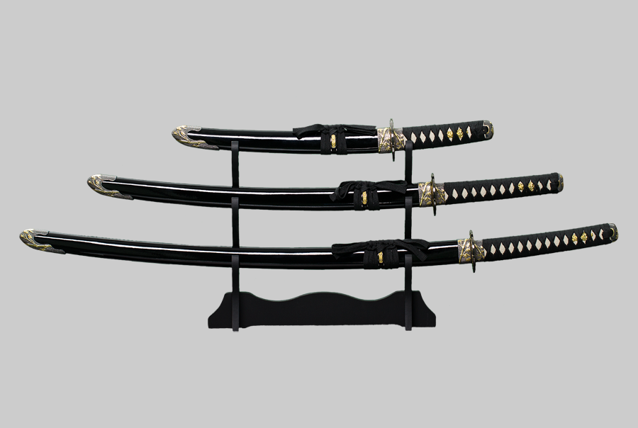

Катана появилась в XV веке, как следствие эволюции тати и использовалась до конца XIX века как традиционное оружие самурая, прежде всего в комбинации с коротким вакидзаси. Катана во многом похожа на более ранний китайский меч мяо дао. Подлинную японскую катану легко узнать по линии закалки, объясняющейся применением специальной техники ковки и закалки, а также рукояти, обтянутой кожей ската и обвитой шёлковой лентой. Для обтяжки также применялась обычная кожа. Резные рукояти из твёрдого дерева или слоновой кости встречаются только у декоративных и парадных мечей. Клинок катаны состоит как минимум из двух разных сортов стали: вязкого для основы и твёрдого для лезвия. Оба компонента сначала очищались путём многократного сложения и сварки, прежде чем из них ковался клинок.
В узком смысле катана — изогнутый полуторный меч с клинком длиной в два или более сяку и рукоятью различной длины. Вес 750—1000 г. Если длина клинка менее двух сяку, то это вакидзаси, если менее одного сяку — кинжал. Ножны для всех трёх видов мечей называются сая; они делаются из дерева магнолии и покрываются лаком. Металлические ножны имеют только серийно изготовленные мечи XX века, однако и они оснащены деревянной подкладкой.
Юми
 Юми — асимметричный лук, с расположением рукоятки приблизительно в одной трети длины лука снизу. Существуют несколько гипотез возникновения такой формы. Основная гипотеза гласит, что такая форма необходима для стрельбы с лошади с возможностью свободного прицеливания в любую сторону. По другой гипотезе данная форма нужна для стрельбы из положения сидя. Также существует гипотеза, что такая форма возникла во времена до изобретения композитного лука для компенсации различий свойств древесины по удалению от корня. Без тетивы лук выгибается в противоположную сторону. Тетиву для юми традиционно изготавливают из пеньки, но большинство современных лучников используют синтетическую тетиву из таких материалов, как кевлар из-за большей долговечности. Обычно тетиву не меняют до самого обрыва. Место контакта со стрелой усиливают дополнительной нитью с клеем, что позволяет защитить тетиву и более надёжно удерживать стрелу. Юми — асимметричный лук, с расположением рукоятки приблизительно в одной трети длины лука снизу. Существуют несколько гипотез возникновения такой формы. Основная гипотеза гласит, что такая форма необходима для стрельбы с лошади с возможностью свободного прицеливания в любую сторону. По другой гипотезе данная форма нужна для стрельбы из положения сидя. Также существует гипотеза, что такая форма возникла во времена до изобретения композитного лука для компенсации различий свойств древесины по удалению от корня. Без тетивы лук выгибается в противоположную сторону. Тетиву для юми традиционно изготавливают из пеньки, но большинство современных лучников используют синтетическую тетиву из таких материалов, как кевлар из-за большей долговечности. Обычно тетиву не меняют до самого обрыва. Место контакта со стрелой усиливают дополнительной нитью с клеем, что позволяет защитить тетиву и более надёжно удерживать стрелу.
Яри
Классическое яри состоит из древка, к которому крепится наконечник. Древко длиной 1,8—2,5 м, в сечении, как правило, круглое или многогранное, из дуба или, реже — бамбука. Наконечники были длиной 15—90 см и отличались мечевидной формой, крепились с помощью хвостовика. Они позволяли наносить колющие и рубящие удары. Благодаря таким наконечникам яри могут быть классифицированы, как глефы. Иногда на 30 см ниже наконечника делалась металлическая крестовина хадомэ. Обычной была цуба. Для более надёжного крепления конец древка снабжали крепёжной муфтой и шайбами. На нижнем конце был подток, который мог применяться для нанесения ударов. Верхняя часть древка лакировалась и обматывалась шнуром.
|